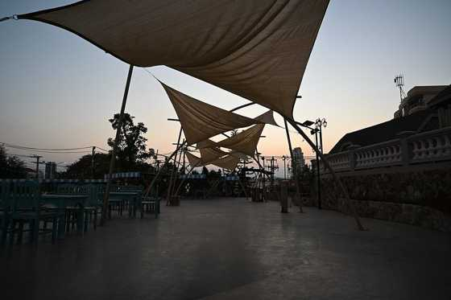
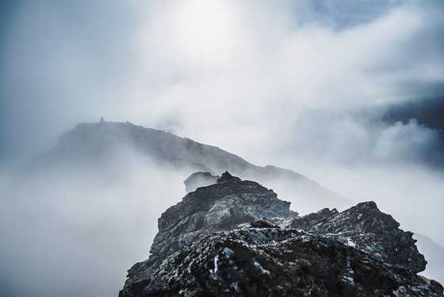
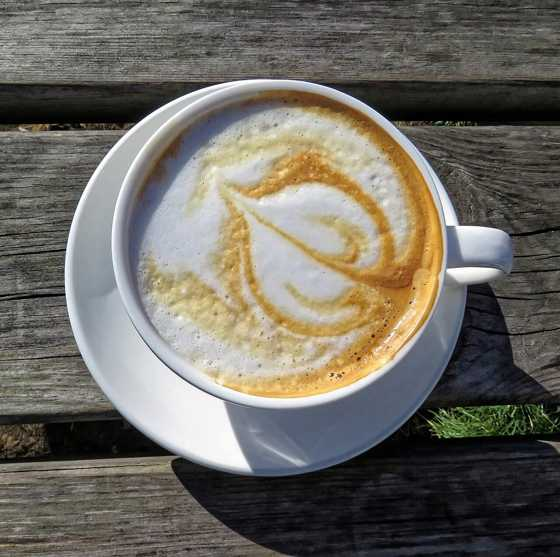
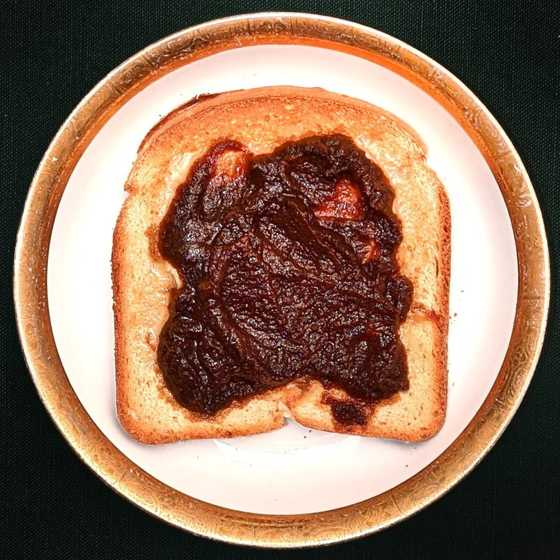
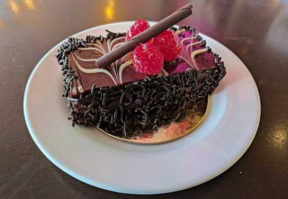
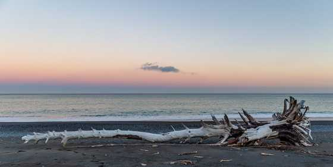
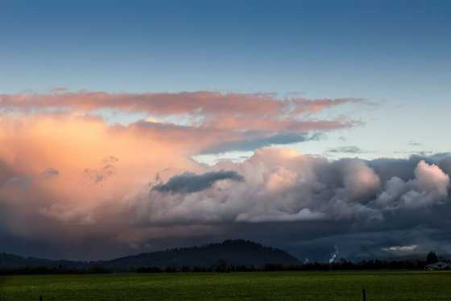
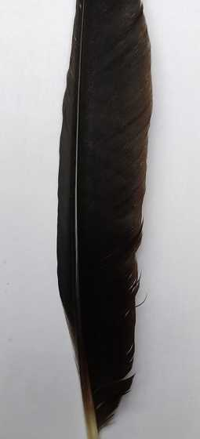
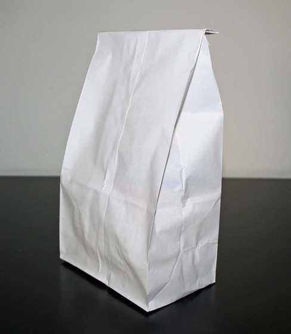

福岡県朝倉市甘木のカフェ
ふらりと寄れる、
ちいさな「村」の一杯。
街なかで気軽に立ち寄れる、軽食とスイーツのカフェ。ペンギンの集う村のように、ゆるやかに人が集まる場所を目指して。
お店のこと
甘木の街に、気軽なカフェ。
PENGUIN VILLAGE cafeは、福岡県朝倉市甘木、西鉄甘木駅から歩いて行ける場所にあるカフェです。紹介記事やグルメサイトの口コミでは「気軽なカフェ」と評され、オリジナルカレーやローストビーフ丼、ホットサンドなどの軽食が紹介されています。
店名の「ペンギン」「ヴィレッジ(村)」の由来は確認できていません。このページの寒色の配色や雪・氷の写真は、店名から連想した制作側のイメージです。
雰囲気のイメージ
窓辺で、ひと息。





メニュー
軽食、スイーツ、ドリンク。
紹介記事によると、メニューは「軽食・ホットサンド」「デザート」「ドリンク」の3つに分かれているようです。オリジナルカレー、ローストビーフ丼などが紹介されています。





| メニュー詳細・価格 | 準備中 |
|---|---|
| 営業時間 | 準備中 |
| 定休日 | 準備中 |
| 電話 | 準備中 |
営業時間などは変更されることがあるため掲載せず「準備中」としています。最新情報はInstagramをご覧ください。
口コミ イメージ例
こんな声が聞こえてきそうです。
以下は制作側が創作したイメージ例で、実在のお客様の声ではありません。
イメージ例駅から歩いてすぐ。ひとりでも入りやすくて、ほっとできるお店でした。
イメージ例ランチのあとにケーキとコーヒー。ゆっくりした時間が流れていました。
イメージ例窓際の席が気持ちよくて、つい長居してしまいそうです。
アクセス
西鉄甘木駅から歩いて。
| 所在地 | 日本、〒838-0068 福岡県朝倉市甘木192-9 |
|---|---|
| 電話 | 準備中 |
| @penguin_village__ |




